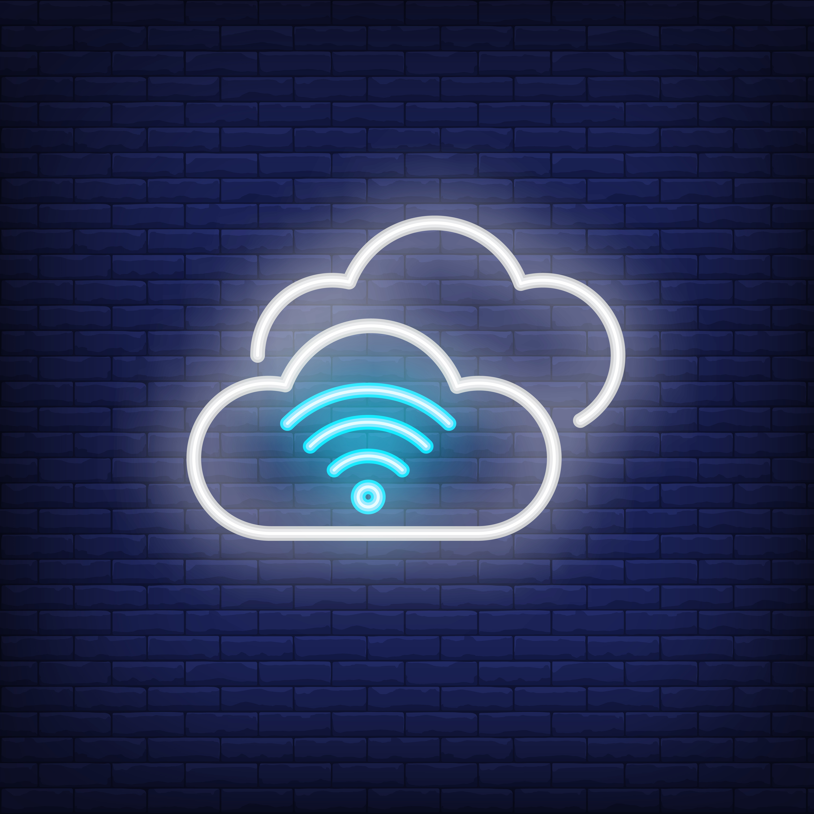
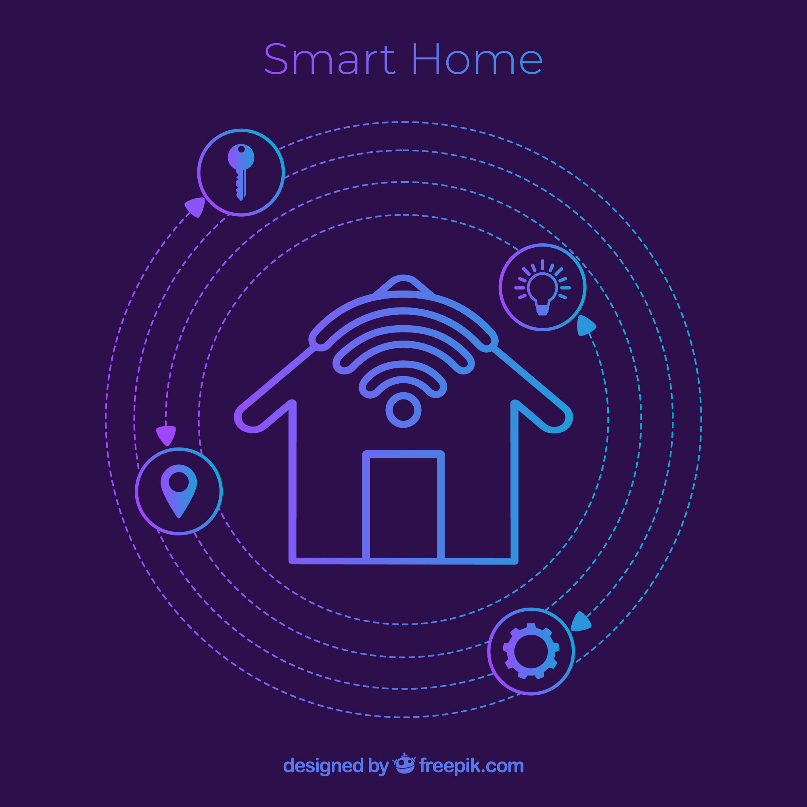
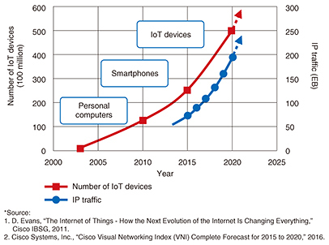
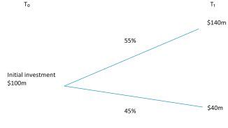
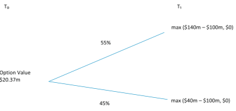
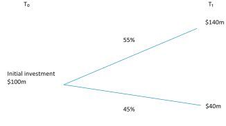
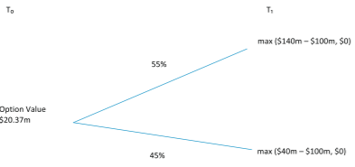

Abstract
The Internet of Things, also called the Internet of Everything or the Industrial Internet, is a new technology paradigm envisioned as a global network of machines and devices capable of interacting with each other. This article presents five IOT technologies that are essential in the deployment of successful IOT-based products and services and discusses three IOT categories for enterprise applications used to enhance customer value.
The internet of things.
Gartner forecasts that the IOT will reach 26 billion units by 2020, up from 0.9 billion in 2009, and will impact the information available to supply chain partners and how the supply chain operates. From production line and warehousing to retail delivery and store shelving, the IOT is transforming business processes by providing more accurate and real-time visibility into the flow of materials and products. In addition to manufacturers’ adoption of the IOT, various service industries are in the process of adopting the IOT to increase revenue through enhanced services and become leaders in their markets. RFID chips that serves as a ticket and connects to Disney’s data repository regarding park visitors. Kroger’s new IOT-based system, Retail Site Intelligence, is one complete retail platform of video analytics, wireless devices, POS devices, handheld sensors, IP cameras, and video management software that was designed to help customers have a better shopping experience by more easily finding the productsthey want and saving time at checkout. The adoption of this technology is rapidly gaining momentum as technological, societal, and competitive pressures push firms to innovate and transform themselves. As IOT technology advances and increasing numbers of firms adopt the technology, IOT cost-benefit analysis will become a subject of great interest. Because of the potential but uncertain benefits and high investment costs of the IOT, firms need to carefully assess every IOT-induced opportunity and challenge to ensure that their resources are spent judiciously.
IOT Technologies
Five IOT technologies are widely used forthe deployment of successful IOT-based products and services:
- Radio frequency identification (RFID)
- Wireless sensor networks (WSN)
- Middleware
- Cloud computing
- IOT application software
Radio frequency identification (RFID)

allows automatic identification and data capture using radio waves, a tag, and a reader. The tag can store more data than traditional barcodes. Passive RFID tags rely on radio frequency energy transferred from the reader to the tag to power the tag; they are not battery-powered. Applications of these can be found in supply chains, passports, electronic tolls, and item-level tracking. Active RFID tags are used in manufacturing, hospital laboratories, and remote-sensing IT asset management.
Wireless sensor networks (WSN)
Wireless sensor networks (WSN) consist of spatially
distributed autonomous sensor-equipped devices to
monitor physical or environmental conditions and can
cooperate with RFID systems to better track the
status of things such as their location, temperature,
and movements. WSN
allow different network topologies and multihop
communication. Recent technological advances in
low-power integrated circuits and wireless communications have made available efficient, low-cost,
low-power miniature devices for use in WSN applications .
WSN have primarily been used in cold chain
logisticsthat employ thermal and refrigerated packaging methods to transport temperature-sensitive
products . WSN are also used for maintenance and
tracking systems. For example, General Electric
deploys sensors in its jet engines, turbines, and
wind farms. By analyzing data in real time, GE saves
time and money associated with preventive maintenance.
Likewise, American Airlines uses sensors
capable of capturing 30 terabytes of data per flight
for services such as preventive maintenance.
Middleware
Middleware is a software layer interposed between software applications to make it easier for software developers to perform communication and . input/ output. Middleware gained popularity in the 1980s due to its major role in simplifying the integration of legacy technologies into new ones. IOT with numerous heterogeneous devices requires simplifying the development of new applications and services, so the use of middleware is an ideal fit with IOT application development. For example, Global Sensor Networks is an open-source sensor middleware platform enabling the development and deployment of sensor services with almost zero programming effort.
Cloud computing
Cloud computing is a model for on-demand access to a shared pool of configurable resources that can be provisioned as Infrastructure as a Service or Software as a Service . One of the most important outcomes of the IOT is an enormous amount of data generated from devices connected to the Internet . Many IOT applications require massive data storage, huge processing speed to enable realtime decision making, and high-speed broadband networks to stream data, audio, or video
IOT application software
The IOT facilitates the development of myriad industry-oriented and user-specific IOT applications. For example, transportation and logistics applications monitor the status of transported goods such as fruits, fresh-cut produce, meat, and dairy products. During transportation, the conservation status is monitored constantly and appropriate actions are taken automatically to avoid spoilage when the connection is out of range. While device-to-device applications do not necessarily require data visualization, more and more human-centred IOT applications provide visualization to present information to end-users in an intuitive and easy-to-understand way and to allow interaction with the environment.
IOT applications to enhance customer value
Because the IOT is such a recent development, there is still a paucity of studies on the social, behavioral,  economic, and managerial aspects of the IOT. This makes it very challenging for companies to make informed decisions as regards IOT adoption/ implementation. Our article is one ofthe firststudies on a conceptual model of IOT applications for enterprises.In this article we identified three categories of IOT applications: monitoring and control, big data and business analytics, and information sharing and collaboration. We also presented investment opportunities and investment evaluation with NPV and real options. Finally, we discussed five challenges in implementing IOT applications for enterprises.
Monitoring and control
The smart home is known to be at the forefront of innovation regarding IOT monitoring and control systems. The primary value propositions are  family and property protection and energy savings. For example, the Verizon Home Monitoring and Control network uses a wireless communications technology designed specifically for remote control applications in home automation. IOT-enabled home appliances and devices can be monitored and controlled outside the user’s home through a computer, tablet, or smartphone. The primary customer value propositions are drivers’ personalized experience and satisfaction. The customer value propositions are appropriately integrated into the connected car environment to provide another revenue stream for Ford.
Big data and business analytics
Business analytics tools may be embedded into IOT devices, such as wearable health monitoring sensors, so that real-time decision making can take place at the source of data. The IOT and advances in business analytics now make it possible to capture vast amounts of individual health data. IOT-based big data are also transforming the healthcare product industry. & Gamble developed the Oral-B Pro 5000 interactive electric
 toothbrush to provide users with a smarter, more personalized oral care routine. The interactive electric toothbrush records brushing habits with mobile technology while giving mouth-care tips alongside news headlines. This innovation provides users with unprecedented control over
their oral care.
toothbrush to provide users with a smarter, more personalized oral care routine. The interactive electric toothbrush records brushing habits with mobile technology while giving mouth-care tips alongside news headlines. This innovation provides users with unprecedented control over
their oral care.
Information sharing and collaboration
Sensing a predefined event is usually the first step for information sharing and collaboration. In the supply chain area, information sharing and collaboration enhance situational awareness and avoid information delay and distortion. Shop Beacon provides Shop kick app users with personalized department-level deals, discounts, recommendations, and rewards. As shoppers enter Macy’s, shop Beacon reminds those Shop kick app users who have opted in. In September 2014, following a pilot test of the application, Macy’s decided to roll out shop Beacon in all of its 4,000 U. Due to competitive pressure, there is expected to be rapid adoption of shop Beacon at other national retailers, too.
Evolution of the foundational IOT technologies
Various types of IOTapplications have emerged, and the willingness of enterprises to utilize them is growing rapidly.the IOTwill generate $14.4 trillion in value; the combination of increased revenues and lower costs will migrate among companies and industries from 2013 to 2022. From an industry perspective, four industries make up more than half of  the $14.4 trillion in value. These leading four industries in terms of value at stake include manufacturing at 27%; retail trade at 11%; information services at 9%; and finance and insurance, also at 9%. Other industries such as wholesale, healthcare, and education lag behind in terms of value generation, with a range between 1% and 7%. Much of the value for manufacturers comes from greater agility and flexibility in factories, and from the ability to make the most of workers’skills. Additionally, a large amount of the value for retailers comes from connected marketing and advertising. Geographic distributions of the value are heavily driven by each region’s relative economic growth rate and by the relativesize of industry sector in each region. In the United States, $4.6 trillion of value is most prevalent in the services area. However, in China, $1.8 trillion of value is derived from rapid economic growth, mainly in the manufacturing sector. Table 1 shows projected evolution in the area of foundational IOT technologies: network, software and algorithms, hardware, and data processing. The network is the backbone of the IOT. It refers to uniquely identifiable objects (things) and their virtual representations in an Internet-like structure. Network technology is moving to unobtrusive wirefree communication technology that allows deviceto-device applications to be deployed more flexibly. Network technology is evolving toward a contextaware autonomous network. Objects rely on software to communicate effectively with each other and to deliver enhanced functionality and connectivity. Software should be developed with the IOT’s interoperability,connectivity, privacy, and security requirements in mind. The focus of software development is shifting to user-oriented, distributed intelligence and machine-to-machine and machine-to-human collaboration. The news that Google is paying $3.2 billion in cash to buy Nest, a smart thermostat business, demonstrates the value of hardware in the IOT. Hardware is innovatively designed and robustly produced, driven by the consumerized IOT devices which have myriad features, functionalities, and operating environments. While RFID tags and sensors have been the focus of hardware innovation, miniaturization of hardware and nanotechnology is leading the energy-efficient, low-power hardware evolution. IOT devices generate enormous quantities of data that need to be aggregated and analyzed in real time to provide information regarding status, location, functionality, and environment of the devices. The traditional data processing method does not work well in the real-time streaming data process of the IOT environment. Since processing large quantities of IOT data in real time will increase workloads of data centers at an exponential rate, data processing will become more context-aware, optimized, and cognitive. In the IOT environment, a large number of devices are connected with each other, and it is not feasible to process all the streaming data available to those devices. Context-aware data processing enables sensors and devices to use context-specific information such as location, temperature, and the availability of a certain device to decide what data to collect and interpret to provide relevant information to other devices or users.
| Before 2010 | 2010-2015 | 2015-2020 | beyond 2020 | |
|---|---|---|---|---|
| Network |
|
|
|
|
| Software and Algorithm |
|
|
|
|
| Hardware |
|
|
|
|
| Data Processing |
|
|
|
|
IOT investment opportunities andevaluation (net present value vs. real option approach)
The IOT is penetrating a wide range of industries including retailing, manufacturing, healthcare, insurance, home appliances, heavy equipment, airlines, and logistics. IOT technologies such as RFID-based merchandise tracking and home networking are concrete and immediately measurable.
Real options
Valuation
Real options example
Real options can prove particularly valuable in fields of high uncertainty and risk, such as information . two main characteristics make real options an appropriate application for IT investments. These characteristics make real option valuation ideal in valuing IOT investment projects, as it can capture value that otherwise would be overlooked. Good managers intuitively understand real options. Real option valuation allows management to quantify these options to more accurately reflect the value of a project and to have a real strategic impact on the value of a project. Table 2 lists four general types of real options. There are several examples of how real options are used in valuation today.
| Type of option | Description |
| Option to Abandon/Switch | This option gives management the option to abandon a project that is operating at a loss and sell or redeploy the assets. |
| Option to Contract | Similarto the option to abandon,this gives managementthe option to scale back a project that is operating at a loss. |
| Option to Defer/Postpone | This gives management the option to wait/learn more to see if a project will be profitable. |
| Option to Expand | This gives management the option to expand/scale up the project based on its success. |
| Real options | Variable | Financial options |
| Present Value of Project | S | Current stock price |
| Investment Cost of a Project | X | Option exercise price |
| Riskiness/Uncertainty of the Project | σ2 | Stock price uncertainty |
| Time Window of the Project | T | Time to expiration |
| Time Value of Money | X | Risk-Free rate |
Here we offer an example. A company is looking to
invest in new smart vending machines that will
reduce costs and increase profits. Management believes there is a probability of 0.55 that there will be
a high demand in this technology with a market
value of $140m, and a probability of 0.45 that there
will be a low demand in this technology with a
market value of $40m. Fig.1shows a decision
tree without real options.
If the cost of investing in this technology at time
zero is $100m and the discount rate is 8%, then from
a simple NPV calculation the value of the project is
—$12.04m, which the standard NPV rejects.
Present Value of Cash In flow
.png) However, management can use a real option approach to evaluate this investment as a phased financing and scaling option. The company could start
with a pilot project and better learn the market over
time. In the following year, management could avoid
full investment of $100m into this smart vending
machine technology if the market turns out to be
$40m, and only invest in this technology if the
market turns out to be $140m. Therefore, management can value the option using a decision tree
that takes the higher value as the exercised
option. The option value of this project from the
real option perspective is ($140m — $100m)*0.55 +
($0m)*0.45 = $22m/(1.08)1 = $20.37m. As long as the
pilot project costs less than $20.37m, this pilot project with a following investment in the smart vending
machine technology is worth doing. Fig.2 showsthe option value calculation, discounted back one
period.
While this example wassimplified forreadersfrom
non-finance backgrounds, more complicated scenarios can be analyzed using the same principles.


However, management can use a real option approach to evaluate this investment as a phased financing and scaling option. The company could start
with a pilot project and better learn the market over
time. In the following year, management could avoid
full investment of $100m into this smart vending
machine technology if the market turns out to be
$40m, and only invest in this technology if the
market turns out to be $140m. Therefore, management can value the option using a decision tree
that takes the higher value as the exercised
option. The option value of this project from the
real option perspective is ($140m — $100m)*0.55 +
($0m)*0.45 = $22m/(1.08)1 = $20.37m. As long as the
pilot project costs less than $20.37m, this pilot project with a following investment in the smart vending
machine technology is worth doing. Fig.2 showsthe option value calculation, discounted back one
period.
While this example wassimplified forreadersfrom
non-finance backgrounds, more complicated scenarios can be analyzed using the same principles.


Challenges in IOT development
As with any disruptive innovation, the IOT will present multiple challenges to adopting enterprises. For example, due to the explosion of data generated by IOT machines, Gartner(2014)suggested that data centers will face challenges in security, the enterprise, consumer privacy, data itself, storage management, server technologies, and data center networking. This section discusses five technical and managerial challenges: data management, data mining, privacy, security, and chaos.
Data management challenge
Data mining challenge
Privacy challenge
Security challenge
Chaos challenge
IOT sensors and devices are generating massive amounts of data that need to be processed and stored. The current architecture of the data center is not prepared to deal with the heterogeneous nature and sheer volume of personal and enterprise data (Gartner, 2014). Few enterprises would be able to invest in data storage sufficient to house all the IOT data collected from their networks. Consequently, they will prioritize data for operations or backup based on needs and value.
As more data are available for processing and analysis, the use of data mining tools becomes a necessity. Data consist not only of traditional discrete data, but also ofstreaming data generated from digitalsensors in industrial equipment, automobiles, electrical meters, and shipping crates. These streaming data are about location, movement, vibration, temperature, humidity, and even chemical changes in the air. Data mining tools can invoke corrective processes to address immediate operational issues or inform managers of discoveries regarding competitors’strategic moves and customers’ preference changes that will impact their short-term and long-term business activities. Data need to be tamed and understood using computer and mathematical models. Traditional data mining techniques are not directly applicable to unstructured images and video data. Coupled with the need for the advanced data mining tools to mine streaming data from sensor networks and image and video data, there is a shortage of competent data analysts.
As is the case with smart health equipment and smart car emergency services, IOT devices can provide a vast amount of data on IOT users’ location and movements, health conditions, and purchasing preferences–—all of which can spark significant privacy concerns. Protecting privacy is often counterproductive to service providers in this scenario, as data generated by the IOT is key to improving the quality of people’s lives and decreasing service providers’ costs by streamlining operations. The IOTis likely to improve the quality of people’s lives. According to the 2014 TRUSTe Internet of Things Privacy Index, only 22% of Internet users agreed that the benefits ofsmart devices outweighed any privacy concerns .
As a growing number and variety of connected devices are introduced into IOT networks, the potential security threat escalates. Although the IOT improves the productivity of companies and enhances the quality of people’s lives, the IOT will also increase the potential attack surfaces for hackers and other cyber criminals. A recent study revealed that 70% of the most commonly used IOT devices contain serious vulnerabilities. IOT devices have vulnerabilities due to lack of transport encryption, insecure Web interfaces, inadequate software protection, and insufficient authorization. On average, each device contained 25 holes, or risks of compromising the home network. Devices on the IOT typically do not use data encryption techniques. Some IOT applications support sensitive infrastructures and strategic services such as the smart grid and facility protection. Other IOT applications will increasingly generate enormous amounts of personal data about household, health, and financial status that enterprises will be able to leverage fortheir businesses. Lack ofsecurity and privacy will create resistance to adoption of the IOT by firms and individuals. Security challenges may be resolved by training developers to incorporate security solutions (e.g., intrusion prevention systems, firewalls) into products and encouraging users to utilize IOT security features that are built into their devices.
The evolution of IOT technologies (e.g., chips, sensors, wireless technologies) is in a hyperaccelerated innovation cycle that is much faster than the typical consumer product innovation cycle. There are still competing standards, insufficient security, privacy issues, complex communications, and proliferating numbers of poorly tested devices. If not designed carefully, multi-purpose devices and collaborative applications can turn our lives into chaos. In an unconnected world, a small error or mistake does not bring down a system; however, in a hyper-connected world, an error in one part of a system can cause disorder throughout. Smart home applications and medical monitoring and control systems consist of interconnected sensors and communication devices and controllers. If a sensor of a medical monitoring and control system malfunctions, the controller may receive an incorrect signal, which may prove fatal to the patient. It is not difficult to imagine smart home kits such as thermostats and residential power meters breaking down or being attacked by hackers, creating unexpected safety problems. The Internet bandwidth can get saturated with data traffic of proliferating devices, creating system-wide performance problems. A single device may have an insignificant problem, but BUSHOR-1218; No. of Pages 10 The Internet of Things (IOT): Applications, investments, and challenges for enterprises 9 for the system as a whole, the chain reactions of other connected devices can become disastrous. To prevent chaos in the hyper-connected IOT world, businesses need to make every effort to reduce the complexity of connected systems, enhance the security and standardization of applications, and guarantee the safety and privacy of users anytime, anywhere, on any device.
Conclusion
Because the IOT is such a recent development, there
is still a paucity of studies on the social, behavioral,
economic, and managerial aspects of the IOT. This
makes it very challenging for companies to make
informed decisions as regards IOT adoption/
implementation. Our article is one ofthe firststudies
on a conceptual model of IOT applications for enterprises.In this article we identified three categories of
IOT applications: monitoring and control, big data
and business analytics, and information sharing and
collaboration. We also presented investment opportunities and investment evaluation with NPV and
real options. Finally, we discussed five challenges
in implementing IOT applications for enterprises.